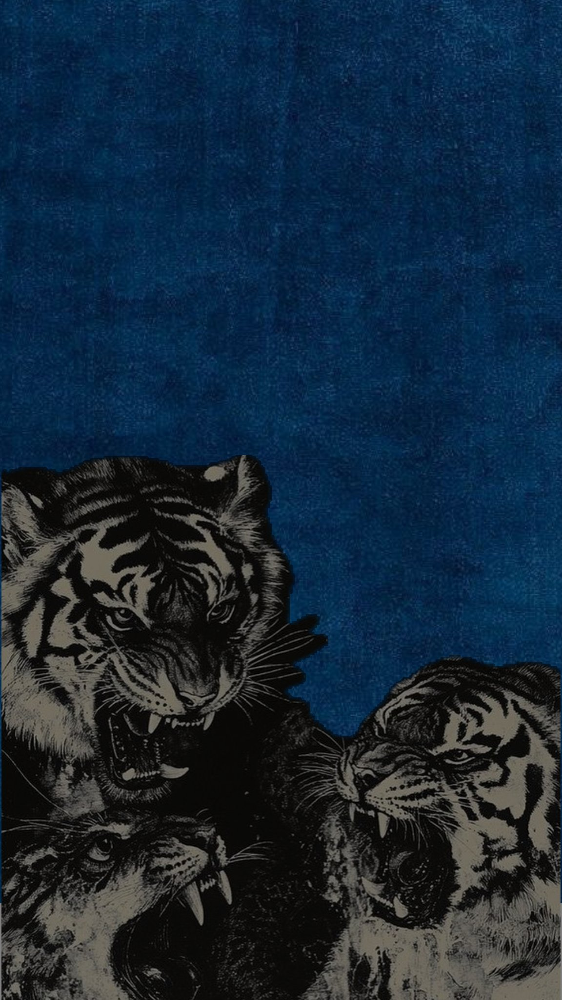

1962, 1974, 1986, 1998, 2010, and 2022
"If you do not enter the tiger's den, how can you get his cub?"
— Chinese Proverb

"If you do not enter the tiger's den, how can you get his cub?"
— Chinese Proverb
Find Us
— built by @epsilon.jpeg · 2026